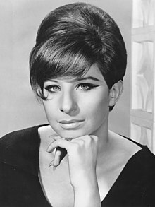
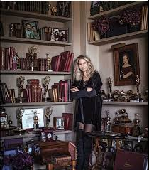

BARBRA STREISAND
Barbra Streisand, original name Barbara Joan Streisand,American singer, composer, actress, director, and producer who was considered by many to be the greatest popular singer of her generation. The first major female star to command roles as a Jewish actress, Streisand redefined female stardom in the 1960s and ’70s with her sensitive portrayal of ethnic urban characters. Her immense popularity matched only by her outspokenness, she became one of the most powerful women in show business, noted for her liberal politics and her philanthropy.
Born: 24 April 1942 (age 78 years), Brooklyn, New York, United States
Spouse: James Brolin (m. 1998), Elliott Gould (1963–1971)
Children: Jason Gould
ALBUMS:
Studio albums: 36
Live albums: 9
Compilation albums:11
Video albums :10
Music videos: 24
Singles :117
Soundtrack albums :15

AWARDS:
Barbra StreisandAwards
Academy Award for Best Actress in a Leading Role
1969
Academy Award for Best Music (Original Song)
1977
Golden Globe Award for Best Original Song
1977, 1973 · Evergreen, The Way We Were
Grammy Award for Song of the Year
1978
Grammy Award for Album of the Year
1964 · The Barbra Streisand Album
Golden Globe Award for Best Director - Motion Picture
1984
Golden Globe Award for Best Actress – Motion Picture – Musical or Comedy
1977, 1969 · A Star Is Born, Funny Girl
Golden Globe Award for Best Motion Picture – Musical or Comedy
1984 l
Kennedy Center Honors
2008
Grammy Award for Best Female Pop Vocal Performance
1987, 1978, 1966, ... · The Broadway Album, Evergreen, My Name Is Barbra, ...
Grammy Lifetime Achievement Award
1995
Grammy Hall of Fame
2008, 2006, 2004, ... · The Way We Were, The Barbra Streisand Album, Funny Girl, ...
AFI Life Achievement Award
2001,1995
Grammy Award for Best Pop Performance by a Duo or Group with Vocals
1981
Golden Globe Cecil B. DeMille Award
2000,1995
Grammy Legend Award
1993,1995
and many more....